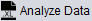
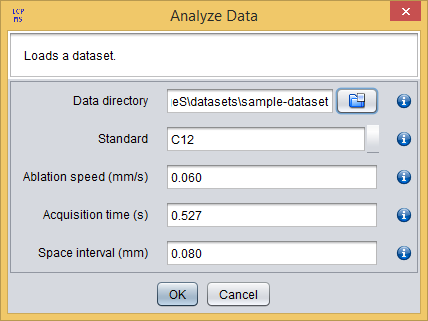

The analysis execution is started by clicking on the  button of the toolbar, which will show you the Analyze Data dialog. As you can see in the following figure, this dialog requires you to introduce the ICP-MS acquisition parameters (refer here for a deepest explanation of these parameters):

Analyze data dialog
If the parameters.conf file is present in the data directory, then the data acquisition parameters are automatically loaded. You will notice that loaded parameters are highlighted with a green background.